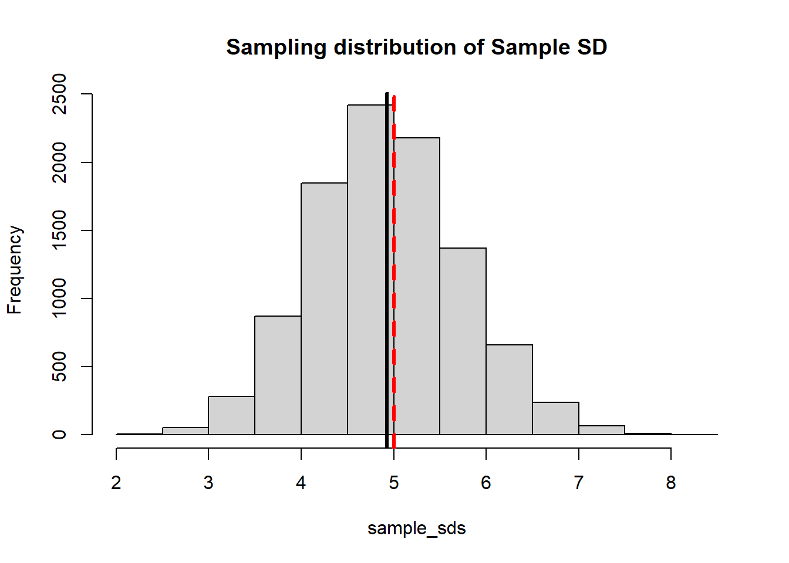
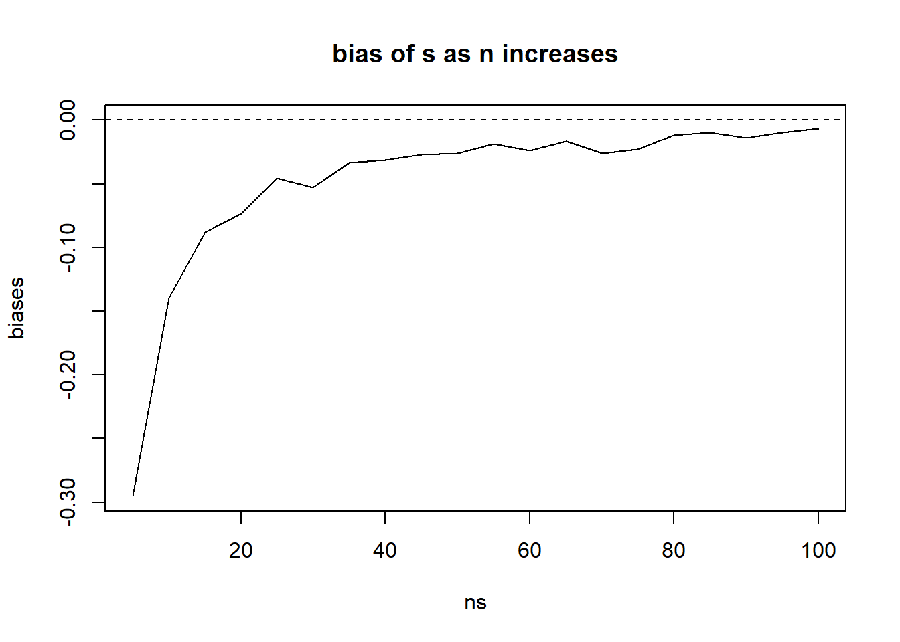
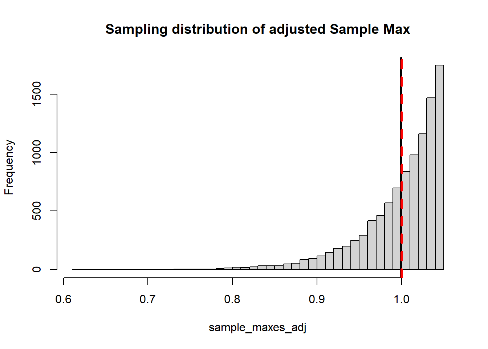

Briefly: increasing the number of Monte Carlo replications gives us a better picture of the sampling distribution of \(\bar{X}\). Increasing the Binomial sample size (number of widgets) decreases the variability of the sampling distribution.
20.2 Trying to achieve a 2% margin of error
Play around with \(n\) in the above code to find how large our sample size has to be so that \(\Pr[ |\bar{X}-p| < 0.02 ] \approx 0.95\).
# This is the exact same setup except we're changing n from 200 to 400.N_MC <-10000; n <-1700; p <-0.8; # Still using p=0.8 and 2000 Monte Carlo trials.# Note that we don't really have to create the data frame again. We# could, if we wanted, just overwrite it, but this is a good habit to# be in to make sure we don't accidentally "reuse" old data.monte_carlo <-data.frame( replicate =1:N_MC,S =rep(NA, N_MC),S_good =rep(NA, N_MC));m <-0.02for(i in1:N_MC){ monte_carlo$S[i] <-simulate_S( n, p ); monte_carlo$S_good[i] <-check_if_S_is_good(monte_carlo$S[i], p, m)}sum( monte_carlo$S_good )/N_MC
[1] 0.9585
By changing the margin from 2% to 1% or up to 4% we are changing the precision of our estimate.
Whether or not our estimate is within the margin (yes/no) can be seen as the accuracy of our estimate.
20.3 Estimate of \(\lambda\) for an exponential distribution
As per the slides, we are using \(1/\bar{X}\) as our estimate of \(\lambda\) since this makes sense from a “method of moments” perspective. Is the estimate biased?
When using estimator \(\hat{\theta}\) to estimate parameter \(\theta\), bias is defined as \(E(\hat{\theta})-\theta\)
lambda =5n <-200NMC <-10000# how many samples I want to estimate lambda onestimates <-replicate(NMC,1/mean(rexp(n=n, rate=lambda)))#I want to look at the BIAS of this estimator#Bias = E(estimator) - targetmean(estimates)-lambda #this should be 0 if the estimator is unbiased
[1] 0.0234176
In this case the bias is positive, and it decreases (gets closer to zero) as sample size increases (not as NMC increases. NMC just gives us a better estimate of the bias, n gives us a better estimate of lambda)
This property - bias goes to zero as sample size increases - is called being “asymptotically unbiased”. It is closely related to a concept called “consistency.”
20.4 Experiments with Estimator Bias
Let’s consider \(S^2\), the sample variance.
Let’s consider a population that is normally distributed, say \(N(100, 5^2)\), so \(\sigma=5\). Let’s look at samples of size 20.
Just for kicks, let’s repeat with a Poisson population with parameter \(\lambda=5\), still a sample size of \(n=20\). Refresher: if X follows a Poison(\(\lambda\)), both EX and VarX = \(\lambda\).
It is a fact that \(S^2\) is an unbiased estimator of \(\sigma^2\) (the population variance). This is true as long as the data is an independent sample, but the population distribution makes no difference.
Since \(E(S^2)=\sigma^2\) one might naturally think that the sample standard deviation is an unbiased estimator of the population standard deviation. Is it true that \(E(S)=\sigma\)?
We can use the same simulation to look at the potential bias of the sample standard deviation (back to the normal distribution).
NMC <-10000sample_sds <-0#empty vectorfor(i in1:NMC){ mysample <-rnorm(20, 100, 5) sample_sds[i] <-sd(mysample)}hist(sample_sds, main="Sampling distribution of Sample SD")abline(v=mean(sample_sds), lwd=3)abline(v=5, col="red", lty=2, lwd=3)

This is no fluke. The sample standard deviation is not an unbiased estimator for the population standard deviation. The reason is because the expectation function does not handle square roots: \(E(\sqrt{X}) \not= \sqrt{E(X)}\). For that reason: \[E(S)=E(\sqrt{S^2}) \not= \sqrt{E(S^2)} = \sqrt{\sigma^2}=\sigma\]
The bias may not be as bad as sample size increases. Let’s look at samples of size 5, 10, 15, …, 100
ns <-seq(5, 100, 5)biases <-rep(0, length(ns))for(i in1:length(ns)){NMC <-10000 sample_sds <-0for(j in1:NMC){ mysample <-rnorm(ns[i], 100, 5) sample_sds[j] <-sd(mysample) } biases[i] <-mean(sample_sds) -5}plot(x=ns, y=biases, type="l", main="bias of s as n increases", ylim=c(min(biases),0))abline(h=0, lty=2)

20.5 Bias of Sample Maximum
Let’s look at the sample maximum as an estimate of the population maximum. Let’s sample data from a uniform(0, 1), and we’ll look at a sample of size 20.
NMC <-10000sample_maxes <-0for(i in1:NMC){ mysample <-runif(20, 0, 1) sample_maxes[i] <-max(mysample)}hist(sample_maxes, main="Sampling distribution of Sample Max", breaks=50)abline(v=mean(sample_maxes), lwd=3)abline(v=1, col="red", lty=2, lwd=3)

Perhaps unsurprisingly the sample maximum tends to under-estimates the population maximum.
It turns out that we can modify the estimator to correct for the bias. If we use \(\dfrac{n+1}{n}X_{(n)}\) this gives us an unbiased estimator for population maximum (you can look this up if you don’t believe me). Let’s demonstrate:
Suppose we have tanks produced each with a serial number from 1 up to N. We are able to capture and observe the serial numbers on a sample of say 5 tanks. Can we estimate the population size of tanks (get an estimate for N)???
By the same logic from above, one might guess that \(\frac{n+1}{n} \max(X)\) would be a good estimate of N. Let’s imagine that there are 100 tanks in the population.
For the discrete case we actually need to use \(\frac{n+1}{n}\max(X) - 1\) as our unbiased estimator. The reason is that the discrete uniform behaves slightly differently than the continuous - because the probability of observing the population max is > 0.
Suppose that a population is of size N. One day you capture and tag a random sample of \(n_1\) individuals and release them back into the wild. Several weeks later you capture a new batch of size \(n_2\) and \(k\) of the new sample are tagged. How can we estimate the population size from this?
Suppose the population is of size 400 and we tag and release 25. Suppose our second sample is of size 20. How many would we expect to see in the second sample?
What would be a good estimate of the population size?
After the first tagging, we know that the population has exactly \(n_1\) tagged individuals. So assuming (1) that the population has been randomized and (2) that deaths are not consequential (either not many, or that both tagged/untagged were equally likely to have died) then the probability of a tagged fish being recaptured is \(n_1/N\). So the proportion of tagged fish in the second sample, which is \(k/n_2\) should be the same as \(n_1/N\).
\[\frac{k}{n_2} = {n_1}{N}\]
Under this logic, we could solve for \(N\) to find a point estimate
\[\hat{N}=\frac{n_1 n_2}{k}\]
For example, if we found 7 in the second sample we’d calculate
450*500/7
[1] 32142.86
It seems to be an over-estimate. We can examine the bias by repeating the simulation Note - we have to throw out any recaptures where 0 are tagged - obviously infinity is not a useful estimate.